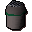
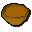

Spice

| Config name | spicespot |
| Item id | 2007 |
| Value | 230 gp |
| Weight | 200g |
| Members | Yes |
| Tradeable | Yes |
| Stackable | No |
| Defined in | scripts/skill_cooking/configs/gnome_cooking/gnome_cooking.obj |
Spice
This could liven up an otherwise bland stew.
Used to make
| Skill | Level | XP | Ingredients | Tool | How | Where | Makes |
|---|---|---|---|---|---|---|---|
| Cooking | 1 | use on item |  Uncooked currymembers |
Sold at
| Shop | Shopkeeper | Stock |
|---|---|---|
| Ardougne Spice Stall. | 1 |
Referenced in scripts
scripts/skill_cooking/scripts/cooking_inv/scripts/stew/stew.rs2